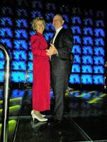
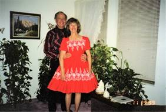
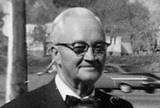
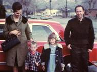
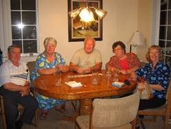
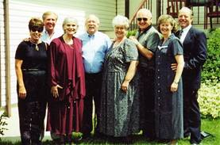
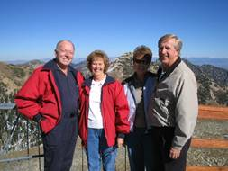
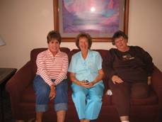
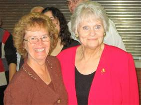

Chapter 7 – YOUNG MARRIED LIFE
The other surprise birthday party Ken gave me was the first year after we were married. We lived in Mom & Dad’s duplex apartments. When I woke up that morning, I expected Ken to wish me a happy birthday, but he didn’t. We both went to work and afterwards I fixed supper and he still didn’t wish me a happy birthday, give me a card or anything so I was disappointed. Later, he said: “Let’s go down to Mom & Dad’s and visit a while. I said ok and when we got there, his mother didn’t wish me a happy birthday either. We sat & visited, and Ken excused himself, I thought to go to the bathroom, but a few minutes later he called me and his mom and said for us to come downstairs as he wanted to show us something. When I started down the stairs, everyone yelled “Happy Birthday”. The cake said “20, and no longer a teen”. I hadn’t wanted to turn 20 as I loved being a teenager. He had invited all his siblings and families. His mom had decorated the basement with crate paper and balloons. They had cake, ice cream and presents. It was fun. He hadn’t forgotten after all. My birthdays with Ken have always been special. Since the after-Christmas sales were on at that time, Ken would take me shopping to buy clothes or whatever I wanted. It was fun being with Ken and having him help me choose what to buy. Whenever he would take me clothes shopping, he would have me try on several outfits and if both he and I liked them, he would want me to buy them all. Sometimes I would get 3 or 4 dresses or outfits. He would usually take me out to eat also and make breakfast for me. He spoiled me.
National Parks (Bryce, Zion & Grand Canyon) in Southern Utah in 1960. That summer, we decided to take a vacation to Southern Utah to see Bryce, Zion’s and Grand Canyon. It was fun camping with Ken as he is a great camper and can do everything. I am blessed to have such a great husband who takes care of me so well. When different tourists would see us, they would say “Look at the cute newlyweds”. We had been married a year, but we still acted like newlyweds. We loved these national parks as they are each so unique and beautiful. While at Bryce Canyon, Ken and I decided to walk down into the canyon to see the different sights, the only problem was that it was getting late in the afternoon so by the time we were headed back up the path, it was starting to get dark and it was steep, but we had to hurry. About halfway up, I was getting really tired and Ken had to keep saying “The top is just around the next corner.” I would make it to that corner and say “No, it’s not.” He would keep saying “I’m sure it is just around the next corner.” That’s how we made it to the top. He knew he couldn’t carry me up and if it got entirely dark, it would be very dangerous, so I’m glad he did that.

Ken and I love to dance. We were able to dance in the stake, and then All-church Dance Festival during June Conference in Salt Lake City at the University of Utah Stadium, when we were engaged. This was really exciting, and we were happy for this opportunity. We hardly ever missed any ward or stake dances. We still really enjoy dances, but there are not very many for adults any more. Ken instigated a ward Gold and Green Ball just prior to our moving from Erda to Mesa in May of 1979. He told the Activity Committee to go all out and hire a good band, decorate good, have a floor show, lots of food - the whole works. Ken was first counselor in the Bishopric and he convinced Bishop Brown and Brother Gull that this would be good for the ward - to unite them, and that the money should come out of the budget, so people wouldn't have an excuse not to come. They did go all out, and it was fantastic. The building was packed and everyone, youth and adults had a grand time. They even had the youth teach the adults to "disco" and the adults taught the youth to waltz, and there were contests for both groups.
Ken & I joined a Square Dance Club when we were living in Clearfield. My friend, Margie's sister & her husband belonged to it and told us about it. Roy & Linda joined it and wanted us to join, but Ken felt we were too busy and he really didn’t want to. Roy told him that if we would go once and didn’t like it, he would never say another word about it. Ken agreed, and we had so much fun and loved it, so we joined. It was the Double "J" Rustlers. The caller was really good. We had a great time. We met once a week at an elementary school gym in Ogden. Square dancing is so much fun. It was fun to wear the dresses and full slips, and Ken the men's western wear. I made some of my dresses and I made shirts for Ken to match my dresses. When you square dance, you concentrate on what the caller is telling you to do, and it is so much fun. You can't think of any of your problems or other concerns, you just concentrate on square dancing. We made lots of friends in the club, and looked forward to going each week. Many times, the club would join with another club and that was fun too. One time we danced at Lava Hot Springs in Idaho - so we took the family and camped them and danced both Friday and Saturday nights. Sandi was old enough to tend the younger children while we were gone over to the building where we danced. I can't remember how long we square danced, but finally realized that we could only spare one night a week for entertainment (our weekly date) and it was becoming sometimes two times a week that we would go square dancing. We wanted to do other things for our weekly date - like go to the temple, go out to eat with friends or our brother's & sister's and their spouses, invite friends to our home to play games, go to a movie, etc., etc., and we didn't want to leave the children that many nights - so we gave up square dancing thinking we would take it up again after the children were raised. Thus far we haven't done so.
It is now January 1998, and we belong to a dance club which meets monthly at the Weber University Ballroom. We have orchestras or bands, decorations, door prizes, refreshments, etc. They have a different theme each month. We really enjoy these dances. Georgia & Rick also belong and their son Brian & his wife. Scott & Michelle went last month. We have met other friends there. We really look forward to it.
 We always look forward to a New Year's Eve Dance. We have gone to dances on New Year's Eve ever since we started dating. They are harder and harder to find, but our good friends, Kent & Darla Rampton, of the Layton 7th ward (when we lived with Ken's Mom) loved to dance also and since Kent was the Bishop, he had contacts with other wards and stakes and could usually find us a dance to go to on New Year's Eve, Valentines and other dances "Gold & Green Balls" in other stakes as well. I was lst counselor in the Relief Society Presidency with Sharon Cottle as President when we lived there. Darla and I have always enjoyed each other. We used to be walking partners - also Sharon Cottle, Pam Hewitt and others.
At the present time we belong to the Quarter Promanadars (square dance club) which meets at the Hay Loft in Plain City. We meet on Friday nights. Renny Mann is the caller. We are really enjoying it. We jumped into their Beginner’s class when it was about halfway through, but because we had square danced before, a lot of it came back to us and we are doing pretty good. As we stay and watch the regulars or try to dance with them, we realize there is still a lot to learn.
Well, let’s get back to when Ken and I first married. We lived in my parent's little duplex apartment for two years - 06/59 to 08/61. The apartment had a small front room, kitchen, bathroom and one small bedroom. Dad had built this duplex behind our home in Sunset. Mom & Dad had it furnished with used furniture. They let us buy our own furniture as we could afford to and then they would sell the used furniture back to the used furniture store. That helped us a lot. With getting the rent cheaper, we were able to save for a down payment for our own home. Ken worked as a computer operator for the Internal Revenue Service at 2nd street in Ogden. I worked part-time as a secretary for my Uncle Dale Porter in his farm manufacturing company. Later, I worked in the bookkeeping department for Clearfield State Bank. We enjoyed it there in our little apartment, living close to Mom & Dad and also Ken’s family and being in the Sunset Second Ward. Ken was asked to be in the Elder's Quorum President, I was asked to be Primary Secretary. I enjoyed Belva Provost who was the president, and all the other sisters I worked with. Even though I was very young, they didn't treat me that way. Before we moved, they asked Ken & me to be ward dance directors. This was fun. We mainly taught the youth in MIA different dances. Ken worked swing shift a lot, so I ended up having to teach some of the dances by myself. The Cha Cha for one.

I loved having my own place, and yet living close to my family and grandparents as well. One bad thing about having Grandpa Bushnell live so close by was he would bang on our door about 7:00 a.m. on Saturday mornings - when we could and would be sleeping in. He would say "you should be up by now". He would want Ken to do something for him.
When Ken worked swing shift, I would be nervous to be there alone, so I would go up to my parent's home and spend the evenings with them. I would have one of my brother's walk me to my apartment. I would lock the door and try to go to bed. The main thing I was nervous about was evil spirits. In high school at slumber parties we told stories about evil spirits (which wasn't a good thing) it got to me and I would have a terrible time trying to go to sleep. I would turn on all the lights, turn on the radio, but I still couldn't get it out of my mind. Finally, I was getting obsessed with it and was getting more and more frightened and I dreaded night to come. I was always so relieved when Ken got home from work and when he could work the day shift. Finally, I realized that this terrible fear was wrong and I had to get over it. I prayed hard and worked hard each night to get it out of my mind. I finally overcame it, but not without much effort. I know Heavenly Father answered my prayers.
Ken & I made a mistake that haunted us for at least a couple of years. We had encyclopedia salesmen come and show us the Burtania encyclopedia's. We were young and inexperienced and signed up for them. I didn't feel good about doing it, but they high-pressured us into it. Practically as soon as they closed the door, I started crying and told Ken I didn't feel good about it. He asked why I had signed and I said because I thought he wanted them and they were pressuring us to sign. He ran after the men and told them we had changed our mind. They wouldn't tear up the contract, and in those days, you didn't have the 3 days to change your mind. They sent the encyclopedias to us, but before they came, the "World Book" Encyclopedia salesman came to see us. We listened to his sales pitch, but told him we couldn't buy his books even if we wanted to because we had just purchased the Burtania encyclopedia's. We explained what happened, and he said that when they were shipped to us, we should just send them back with a letter that we didn't want them. He said if we didn't open them, we would be alright. I'm sure he thought that if we did this, we would buy his books. We did eventually, and they have been good books. But, the Burtania company did everything they could to make us pay for the books. We told them we didn't have them, and they said we had to pay for them anyway. They called and threatened to garnish Ken's wages, they sent bill collectors, they sent nasty & threatening letters, they called Ken's boss, etc., etc. It was a bad experience, but finally they gave up - they had to as we never accepted their books.
Pat married Ron Bradfield in the fall of 1958, our junior year. They were in love and I think Pat wanted to get out of her parent's home. Ken and I witnessed their marriage at Pat’s parent’s home. About a year later when Ken and I were living in Sunset, renting Mom and Dad’s apartment behind their home, I got a call from Pat. She said the missionaries had finished teaching her the lessons and she wanted to be baptized as she had a testimony that it was true, but was afraid that if she did, her parents would disown her. I went over to her apartment to talk with her. I told her that many had joined the church even though it meant their folks would disown them. She decided to join as her husband wanted her to do so also. Her parents did disown her and made it very miserable for Pat. They even came to her apartment and took back everything they had ever given her (at least the things she still had). Finally, after several months and much heartache, they did reunite. Pat & Ron started having a family and Pat’s parents wanted to be able to see and enjoy their grandchildren. Pat & Ron wanted to be married in the temple, but Pat was having a hard time with the law of tithing. We had another good talk. She explained to me that she wanted to pay tithing, but there just wasn’t enough money. She had figured and refigured and when she paid the bills, and bought the food, there wasn’t money left to pay tithing. I explained that if they would pay their tithing first (before paying their bills) the Lord would bless them, and they would have enough money left over to pay their bills and buy their food. I told her it worked for us and I was sure it would for her. I told her to at least try it. I really prayed hard for her that she would have the faith to try it. She did, and it did work. She called and told me that she didn’t know how it worked, but it did, and she was so happy. They were able to get a temple recommend and go to the temple. I was able to be the one to go through with her - since her mother wasn’t a member and she didn’t have a sister or any close family member. I was thrilled to be with her.
We have always stayed close. She has thanked me over and over for being her best friend and fellowshipping her into the gospel and setting the example for her. Pat is a very special lady. She has raised a wonderful family. She is a wonderful wife, mother and grandmother. She has been a YWMIA President and loved the girls. She has done a lot for so many people and loves the Lord and continues to serve him and her fellow men. I am thankful that Pat was my best friend. My husband, Ken, is now my best friend, but she continues to be a very dear friend. I know that I was just an instrument in the Lord’s hands to help Pat into the Church, and it was him, not me. I don’t want the credit, but I am thankful to my Heavenly Father for the blessing she has been in my life. Pat & Ron have four children, 2 boys and 2 girls. Ron had been in a motorcycle accident and had been in a coma for a month or more. He had many surgeries, but thankfully he was ok except for lots of arthritis. He had a stroke and passed away when he was about 68 years old. That is young, and Pat has been a widow since then and it has been hard for her. She is overweight and has artheoarthritis, which is very painful, so she is limited on what she can do. She was in so much pain that sometimes she couldn’t go to church, but she would try to go to Sacrament Meeting if she possibly could. I talked to her the other day, Feb. 2013, and she said she is going to all her meeting now. Not because she is feeling better, but because she feels she needs to be there. She is in so much pain, but she tries to concentrate and feel the spirit. She says it takes 2 or 3 days to recuperate from going, but she is still determined to do it. Her two daughters, who were strong in the church, have now left the church and it is causing her a lot of heartache. Her two sons are still very strong in the gospel. David, her youngest, and his wife and children are living with Pat. Pat’s home is paid for and they are not making enough money to buy a home. David’s son just left for his mission and Pat was thrilled about that. She says her daughter-in-law is not a good housekeeper, and Pat’s health won’t allow her to keep it up, but she says she is glad they are there as they are good people and she enjoys them, and her grandchildren are so cute.

“Our group of good friends”. My friends, Pat & Ron Bradfield, who I mentioned above, Margie & Gary who got married in April of our senior year - not sure why they didn't wait until school was out. Ken & I were married next - in June, then Joan & Ralph were married in the fall. Eleanor & Dennis had been going together the longest (6 years), but they didn't get married until the following June. They used to fight so much when we were double dating - that we worried they would kill each other if they should marry. But, they didn't - in fact, they get along good and are happy. We all lived in the Weber & Davis County area, so we still did a lot together after we were married. Our husbands all became good friends also. Over the years we have stayed close. Years later, we still usually get together at least twice a year or more.
They all started having children, soon after they were married, and that became the major topic of conversation. Ken & I wanted children also, but weren't able to have any for awhile - so that worried me and left me feeling bad after being with the other couples and their babies. I finally got pregnant and we were so happy, but I had a miscarriage at about 3 months. We were really disappointed. I decided to take it to the Lord. I prayed asking for a child, and promised the Lord that if I was blessed with a child I would do everything in my power to teach the child righteous principles and set a good example. I did get pregnant for which I was very grateful. That special baby, was our “Sandi”.
Our Friends Joanne & Ralph Petersen have a condo at Snowbird and have invited us a couple of times to be with them and our other friends (Eleanor & Dennis Ewing, Margie & Gary Nelson & Pat & Ron Bradfield) to spend a couple of days. We always had a great time laughing & talking, hiking, enjoying the beautiful scenery, riding the tram, playing games, eating, munching, etc.
Pat was my best friend growing up and Eleanor was my next best friend. We were all friends with Margie and Joanne too. We had a great time growing up together in the 40’s and 50’s. We all got married within a couple of years of each other. Our husbands enjoyed each other too, so we got together often to eat, play games, go to dances, etc. It is now 2013 and we are still good friends although we don’t get together as often since Pat’s husband, Ron, died with a stroke over five years ago, and Margie was killed in a car accident a year later. Her and Gary had put in to serve a mission and their mission call was in the mailbox when she was killed. We had missed them. Joanne has had kidney problems, was on dialysis, and got a kidney transplant, but still has problems. Eleanor is on oxygen round the clock so the last time we got together for lunch, she had to bring her portable oxygen tank and Joanne was on dialysis every other day. They live in St. George, but I had e-mailed her to see if we could all get together when they were up the next time to visit their family, so she called me to say when they would be up, and I called the others and we had a great visit. Gary had remarried a lady named Ruth, so we met her that day.
Pat has terrible health and has for a long time. She is overweight and has osteoarthritis and suffers terribly from it, but usually is positive and appreciates the blessings the Lord has given her. Her two daughters have left the church, and that is heartache to her, but her two sons are still strong in the church. Pat goes to church each week even though she is in terrible pain. I love that special friend and am proud of her. What a great example she is to me and everyone. Joanne passed away in 2014 of Cancer. Ron left Pat pretty well off, but she divided his retirement with her four children, then later let her youngest son, David, and his family move into her home since David was out of work. This wasn’t a good idea as David’s wife wasn’t a good housekeeper and soon the house was a mess and that was hard on Pat since she was a good housekeeper. They had a big dog and other children. Pat had to tend the children a lot and with Pat’s bad health, that was hard on her too. Pat helped them with their bills and eventually signed her home over to them. Big mistake! In 2016, David and his wife sold Pat’s home and moved her with them to Arizona to an apartment. Pat loved her home and hated to leave it but had no choice. Things are even worse now as David and his wife thought they could find good employment in Arizona, but it hasn’t turned out that way. (The grass is always greener on the other side.) Finances are bad again and Pat is helping them out with her Social Security. Pat’s doctor in Arizona won’t give her the medications her doctors in Utah were giving her for pain and her health problems, so she is really suffering. We keep in touch. While we were still living in Clinton, I asked Pat if Ken and I could come and get her and she could stay with us for a week, two weeks or however long she could. We thought it would be good to get her out of the house and be with us. At first, she was excited and wanted to come, but later she called and said that she has bladder and bowel problems now too and it just wouldn’t work, especially since we only had one bathroom there. I feel so bad for her as she is such a good person. She doesn’t blame the Lord for her trials, but said she wondered what she had done wrong to deserve such a life. The only happy time Pat has had, was when raising her children with Ron and their life before Ron died. I told her that the Lord chastens those he loves, and that she hadn’t done anything wrong, that these are just trials and to just have faith and try to endure to the end. We sure pray for her. In November 2017, I talked to Pat on the phone and she had fallen and broken her femur bone in her leg and had to have it operated on. Her son and daughter-in-law both work and their children are in school, so there was no one to take care of her after she came home from the rehab. She tried to get into a state funded assisted living, but it didn’t work out. Ken and I went to visit her in Provo at her rehab and when we left, we were very concerned about how she would even get to the bathroom with being alone and we decided that she needed to come and live with us, so we could take care of her. She said she would think about it, and she later called and said she couldn’t as it wouldn’t be fair to us and our children. She knows that we usually go visit Shellie and her family in Arizona at least once a year and they come and stay with us for a couple of weeks each summer or more often. We go to Twin Falls, Idaho (Kimberly, Idaho) to visit Jeff and his family often and we do a lot with our family. She felt she would be a burden on us, and she didn’t want that for us or to slow us down, so she said “No”, that she would work it out and be okay. She did work it out, and her son and his family helped her more. We realized that it would have been hard to have Pat stay with us, but I was glad we offered that to her, and we would have done it and the Lord would have helped us, if she had said “Yes”.
I worked part-time as a secretary/receptionist for my Uncle Dale in his farm manufacturing business. I enjoyed working as a secretary and working for Uncle Dale. He was very good to me. His business was called Clear-field Manufacturing Company. Hal and Bryce worked for Uncle Dale part-time also making farm equipment. Uncle Dale worked so many hours there at his business. I told him one day that he should take more time off to relax and enjoy life. He said “Mae, this is what I enjoy doing. I love my work.” Years later I found out that his wife, Aunt Esther, who I always thought was so happy and fun to be around (at least she was whenever I was around her) was just the opposite at home. My cousin, Randy, said that his mother was a very depressed person, negative and hard to be around, so it was easier for his dad to just stay at work rather than be around her. The children all worked for their dad in his business too and later he divided the business and gave each of his children part of it. After a few months, I wanted full-time work, so I applied at Clearfield State Bank. I passed the test with a high score and passed the interview so was hired. I was a book-keeper. I enjoyed the ladies I worked with and I enjoyed the work. My second cousin, Marilyn Bushnell also worked there. She lived in Clearfield. I hadn’t known her before I started working here. I worked there less than a year because I got pregnant with Sandi, and we bought us our new home on 13th street in Ogden. It was funny how the ladies found out that I was pregnant. When I was hired, John asked if I would plan on working for at least a year. I told him “yes”, as I had had trouble getting pregnant, so I didn’t think that would be a problem. Finally, I started having morning sickness, so I brought soda crackers to munch on to help me. The other ladies brought snacks, so I didn’t think anything about it. The day that I went to the doctor to make sure I was pregnant, I told the ladies that I had an appointment with the eye doctor as I didn’t want them to know that I was going to an OBGYN. When I came back, they were laughing, and I asked them why they were laughing and they said “You forgot to take your glasses to your appointment”. (I had left them on my desk). They said, “You are pregnant, aren’t you?”. I told them “yes”, how did you know? They said they suspected it when I was always eating soda crackers. When I told John that I had to quit before the year was up, he was kind and understanding.
**See if this duplicates part of the above.**
My friends, Margie & Gary got married in April of our senior year - not sure why they didn't wait until school was out. It wasn’t that they had to get married, as she was not pregnant, and they were married in the temple. Ken & I were married next - in June, then Joan & Ralph were married in the fall. Eleanor & Dennis had been going together the longest (6 years), but they didn't get married until the following June. They used to fight so much when we were double dating - that we worried they would kill each other if they should marry. But, they didn't - in fact, they get along good and are happy. We all lived in the Weber & Davis County area, so we still did a lot together after we were married. Our husbands all became good friends also. Over the years we have stayed close. We usually get together at least twice a year or more.
Anyway, they all started having children soon after they were married, and that became the major topic of conversation. Ken & I wanted children also, but weren't able to have any for awhile - so that worried me and left me feeling bad after being with the other couples and their babies. I finally got pregnant and we were so happy, but I had a miscarriage at about 3 months. We were really disappointed. I decided to take it to the Lord. I prayed asking for a child, and promised the Lord that if I was blessed with a child I would do everything in my power to teach the child righteous principles and set a good example. I did get pregnant for which I was very grateful.
I had only been working part time for Uncle Dale and I wanted full-time work so I applied at Clearfield State Bank. I passed the test with a high score and passed the interview so was hired. I was a book-keeper. I enjoyed the ladies I worked with and I enjoyed the work. I worked there less than a year because I got pregnant with Sandi, and we bought us our new home on 13th street in Ogden. I’ll insert a funny incident that happened there. When I came back to work from my first doctor appointment, the ladies were laughing and said “So, you’re going to have a baby.” I said “How did you know.” They said because you said you were going to the eye doctor, but you left your glasses here. Also, we have noticed that you have been eating lots of soda crackers and you haven’t looked so good so we thought you must be having morning sickness. When John hired me, he asked me if I could work at least a year as they hated to spend the time and money training a person if they only stayed for a few months. We had been trying to have a baby, but I hadn’t been able to get pregnant, other than one miscarriage, so I fully intended to work there for at least a year. This would only be about 10 months so I didn’t want them to know until I had to tell them – but they figured it out. John was ok with it, he understood.
I quit work at the bank in August as we moved into our new home in Ogden. We were excited to move into our home. Since it was new, we were able to choose the carpet, Formica, etc. The home had two bedrooms and a bath, a long kitchen and long living room and a full unfinished basement. We put the landscaping in and had a nice garden out in back.